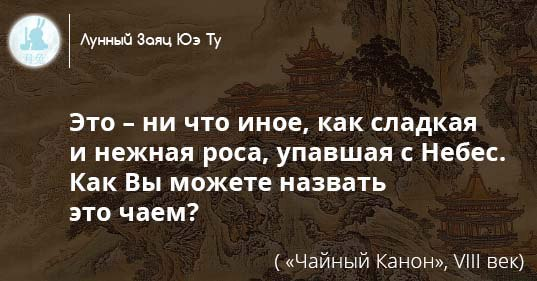

8 коварных вопросов про пуэр.
Закапывают ли пуэр в землю?Нет.
Почему тогда он пахнет землей? Такой вкус бывает у пуэра низкого качества, который плохо хранился или неправильно заварен. Или когда эти факторы сочетаются. У пуэров более интересная и глубокая палитра вкусов, ароматов и запахов: дерево, орехи, курага, чернослив, опавшая листва, лес и т.д. Мой пуэр пахнет рыбой и кальмарами - это тоже палитра вкуса? Если вам нравится – можете пить, но в данном случае внимательно следите за своим здоровьем. Такой запах в пуэре появляется, если его неправильно хранили или транспортировали. А еще там есть грибы. Это грибной чай? Вопрос коварный. Есть чайный гриб – это совсем другая субстанция, к пуэру не относящаяся. Есть гриб Aspergillus foetidis, который участвует в процессе ферментации чая. Но в готовом чае его в живом виде нет. С таким же успехом можно говорить о грибах в вине или соевом соусе. Так что нет, не грибной. Есть ли в пуэре кофеин? Кофеин в чае также присутствует, но несколько в иных соединениях, нежели в кофе. Они медленнее усваиваются и больше тонизируют, чем будоражат ваш организм. Эффект от пуэра, какой он? Безусловно, качественный чай, правильно заваренный при надлежащем настрое, дает свое состояние. Чайное состояние. Для каждого оно индивидуальное и личное. Каким оно будет у вас, я не знаю. Пробуйте. Как заварить пуэр чтобы вставило? Заварите правильно. Выберите время, когда ничто вас не будет отвлекать. Следуйте простым и понятным советам. Есть мнение, что чай вообще напиток резонансный – чего вы от него ждете, то и получите. Что выбрать шен или шу пуэр? Изначально был только шен пуэр, его называют «сырой» или «зеленый». В 70-ые годы прошлого века стала применяться технология «водуй» - влажного скирдования, когда чайный лист вылеживался, ферментировался и искусственно «состаривался». Так появились шу пуэры – «зрелые». По идее, любой «шен», в конце концов, лет через 20, дозреет и станет «шу». Но стоить такой пуэр будет неприлично много денег. Сейчас на рынке представлены шу и шен пуэры – вкус у них сильно отличается. Любители есть как у тех, так и других. Пробовать надо оба и выбирать свой. Легенда о лунном зайце.
О Лунном Зайце Юэ Ту сложено много сказок весёлых, грустных и поучительных. Давным - давно ходила в китайском народе такая легенда. Живет на далекой луне Лунный Заяц. Сидит он днями и ночами под деревом гуйхуа и толчет по воле богов Порошок Бессмертия. Исцеляет это чудесное снадобье от любых болезней, а в большей дозе омолодит человека, сделает его бессмертным. Однажды постигла людей страшная болезнь. Вымирал род человеческий, гибли люди один за другим. Взмолились они Лунной Богине: "Исцели нас, о прекрасная Богиня Луны! Умоляем тебя - спаси род человеческий!". Но тиха была Лунная Богиня. Не сжалилась она над людьми. Тогда сошёл с Луны Лунный, или как его еще называли Нефритовый, Заяц и сказал: "Великий китайский народ! Лунная Богиня не хочет помогать вам! Она считает вас чем то вроде мелких букашек у себя под ногами. Но я так не считаю. И поэтому я помогу вам!". Сказав это, он отдал людям свой Порошок Бессмертия, ровно столько, чтобы вылечить всех, но меньше чем нужно, чтобы кто-нибудь стал бессмертным. Приняли люди Лунный Порошок и выздоровели, а Зайца еще долго воспевали в своих легендах. Такова легенда о Лунном Зайце и его Порошке Бессмертия, а наш чай, хоть и не обладает столь чудесными свойствами, но точно продлевает жизнь и дарит здоровье!
Автор текста: Софья Сивкова.
Сорта китайского чая
Точно никто не знает, сколько существует сортов китайского чая.
Большинство специалистов уклончиво говорят: «более тысячи». Исчезают и забываются старые сорта чая, появляются новые.
Мне нравятся даже сами названия.
Ань Си Хуан Цзинь Гуй - Золотая корица из Анси
Ба Сянь - Восемь бессмертных
Бай Мао Хоу - Беловолосая обезьяна
Бай Му Дань - Белый пион
Бай Хао Инь Чжэнь - Серебряные иглы с белыми ворсинками
Бай Цзи Гуань - Белый петушиный гребень
Бань Тянь Яо - Полуденный дух
Би Ло Чунь - Изумрудные спирали весны
Гао Шань Юнь У - Облачный туман с Высоких Гор
Да Хун Мэй - Большая красная слива
Да Хун Пао - Большой красный халат
Дун Фан Мэй Жэнь - Восточная красавица
Инь Чжэнь Ван - Владыка Серебряных Игл
Лю Ань Гуа Пянь - Тыквенные семечки из Люаня
Люй Юй Лу - Нефритовая роса
Люй Я - Зеленые почки
Мао Се - Волосатый краб
Моли Бай Юй Ту - Белый нефритовый заяц
Мэй Цзя У Лун Цзин - Колодец дракона из оврага Мэй Цзя
Мэн Дин Гань Лу - Сладкая роса с горы Мэн Дин
Синь Ян Мао Цзянь - Ворсистые лезвия из Синь Ян
Сун Бай Чжан - Улун Сосны и Кипариса
Сянь Пинь Ван - Владыка чаев дающий бессмертие
Тай Пин Куй Цзянь - Острые кончики из Тай - Пин
Тай Пин Хоу Куй - Главарь из Хоу - Кэна
Те Гуаньинь - Железная Бодхисатва Гуанинь
Те Лохань - Железный архат
У Шэ Ча - Пристанище туманов
Фуси Гун Пинь - Императорский чай с Ручья Счастья
Фэн Хуан Дань Цун - Одинокие кусты с горы Феникса
Фо Шо – ладонь Будды
Хуа Лун Чжу - Жасминовая жемчужина дракона
Хуан Хуа Чжень - Солнечные лучи
Хуан Цзинь Гуй - Золотая корица
Хуан Шань Бай Му Дань - Белый Пион с Желтых гор
Цзюнь Шань Мао Цзянь - Ворсистые лезвия с гор Цзюнь Шань
Цзинь Цзюн Мэй- Золотые брови или золотые брови скакуна
Цюэ Шэ - Воробьиные язычки
Чжэн Шань Лао Сун - Старая сосна с гор Чжэншань
Шань Линь Си - Ручей горного леса
Шоу Мэй - Реснички долголетия
Шэн Тай Люй Ча - Великородный зеленый чай
Э Мэй Чжу Е Цин - Бамбуковые листья с горы Эмэйшань
Юй Цзянь - Нефритовые лезвия
Про иерглиф чай
Один и немногих иероглифов, который я могу отличить от других, это - «茶» - чай. Современное написание иероглифа чай «茶» не всегда было таким. Долгое время в Китае не существовало одного определенного слова, обозначающего понятие «чай». Для его обозначения использовались разные иероглифы: 荼 (ту)、槚 (цзя)、荈 (чуань)、蔎 (са)、茗 (мин).
Среди них в древних текстах наиболее часто встречается иероглиф 荼 (ту), который вероятно имел не одно произношение, и сейчас трудно сказать, какое именно относилось к чаю В эпоху династии Тан (618-907 гг.) была реформа языка, и «чай» претерпел небольшое изменение в своем написании. Нижняя часть иероглифа была изменена, и «чай» стал писаться так, как он пишется сейчас «茶». Сама мутация иероглифа может рассматриваться, как проявление более уважительного отношение к чаю, так как радикал «злак, трава» «禾» в старом иероглифе, был заменен боле «достойным» радикалом «дерево» «木». Впервые иероглиф «чай» в новом написании появился в танском издании трактата «Шэнь Нун бэнь цао цзин», «Трактат о свойствах растений». В середине 9-го века уже повсеместно использовалось это написание иероглифа, и знаменитый Лу Юйв своем «Чайном каноне» - «Ча цзин» применяет только его. На КДПВ различные варианты написания иероглифа чай.О доставке
Весь ассортимент чая, имеющегося в наличии, смотрите в Магазине.
Оформить свой заказ можно прямо там, выбрав нужный чай и нажав по кнопку "Оформить заказ" + указать ваш телефон. Доставка в пределах города Ижевска - бесплатно. Доставка осуществляется с 8.00 до 20.00. Сроки доставки - в течение нескольких часов или по договоренности. Оплата при получении. И да, будут подарки и пробники! Чай вашему дому!